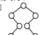
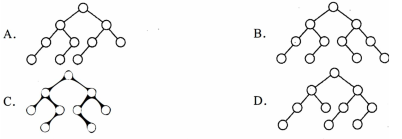
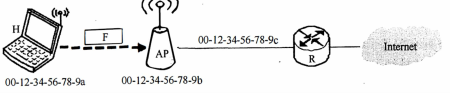
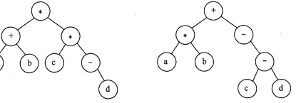
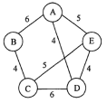
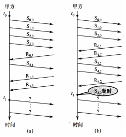

2017 年全国硕士研究生入学统一考试 计算机科学与技术学科联考计算机学科专业基础综合试题
一、单项选择题（1～40 小题，每小题2 分，共80 分。下列每小题给出的四个选项中，只有一项符 合题目要求）
1. 下列函数的时间复杂度是______。
int func(int n) {
int i=0, sum=0;
while (sum<n) sum += ++i;
return i;
}\displaystyle O(\log n)\displaystyle O(n^{1/2})\displaystyle O(n)\displaystyle O(n\log n)2. 下列关于栈的叙述中，错误的是______。 I. 采用非递归的方式重写递归程序时必须用栈 II. 函数调用时，系统要用栈保存必要的信息 III. 只要确定了入栈次序，就可确定出栈次序 IV. 栈是一种受限的线性表，允许在其两端进行操作
3. 适用于压缩存储稀疏矩阵的两种存储结构是______。
4. 要使一棵非空二叉树的先序序列与中序序列相同，其所有非叶结点须满足的条件 。
5. 已知一棵二叉树的树形如右图所示，其后序序列为e, a, c, b, d, g, f，树中与结点a 同 层的结点是______。

6. 已知字符集{a, b, c, d, e, f, g, h}，若各字符的哈夫曼编码依次是0100, 10, 0000, 0101, 001, 011, 11, 0001，则编码序列0100011001001011110101 的译码结果是______。
7. 已知无向图G 含有16 条边，其中度为4 的顶点个数为3，度为3 的顶点个数为4，其他顶点的度 均小于3。图G 所含的顶点个数至少是______。
8. 下列二叉树中，可能成为折半查找判定树（不含外部结点）的是______。

9. 下列应用中，适合使用B+树的是______。
10.在内部排序时，若选择了归并排序而没有选择插入排序，则可能的理由是______。
I. 归并排序的程序代码更短 II. 归并排序的占用空间更少 III. 归并排序的运行效率更高
11.下列排序方法中，若将顺序存储更换为链式存储，则算法的时间效率会降低的是______。 I. 插入排序 II. 选择排序 III. 起泡排序 IV. 希尔排序 V. 堆排序
12.假定计算机M1 和M2 具有相同的指令集体系结构（ISA），主频分别为1.5GHz 和1.2GHz。在M1 和M2 上运行某基准程序P, 若平均CPI 分别为2 和1, 则程序P 在M1 和M2 上运行时间的比值 是______。
13.某计算机主存按字节编址，由4 个64M×8 位的DRAM 芯片采用交叉编址方式构成，并与宽度为 32 位的存储器总线相连，主存每次最多读写32 位数据。若double 型变量x 的主存地址为804 001AH, 则读取x 需要的存储周期数是______。
14. 某 C 语言程序段如下：
for (i=0; i<=9; i++) {
temp = 1;
for (j=0; j<=i; j++) temp *= a[j];
sum += temp;
}下列关于数组 a 的访问局部性的描述中，正确的是______。
15.下列寻址方式中，最适合按下标顺序访问一维数组元素的是。
16.某计算机按字节编址，指令字长固定且只有两种指令格式，其中三地址指令29 条，二地址指令 107 条，每个地址字段为6 位，则指令字长至少应该是______。
17.下列关于超标量流水线特性的叙述中，正确的是______。 I. 能缩短流水线功能段的处理时间 II. 能在一个时钟周期内同时发射多条指令 III. 能结合动态调度技术提高指令执行并行性
18.下列关于主存储器（MM）和控制存储器（CS）的叙述中，错误的是______。
19.下列关于指令流水线数据通路的叙述中，错误的是______。
20.下列关于多总线结构的叙述中，错误的是______。
21.I/O 指令实现的数据传送通常发生在 。
22.下列关于多重中断系统的叙述中，错误的是______。
23. 假设 4 个作业到达系统的时刻和运行时间如下表所示。
| 作业 | 到达时刻 t | 运行时间 |
|---|---|---|
\displaystyle J_1 | 0 | 3 |
\displaystyle J_2 | 1 | 3 |
\displaystyle J_3 | 1 | 2 |
\displaystyle J_4 | 3 | 4 |
系统在 t=2 时开始作业调度。若分别采用先来先服务和短作业优先调度算法，则选中的作业分别是______。
\displaystyle J_2、\displaystyle J_3\displaystyle J_1、\displaystyle J_4\displaystyle J_2、\displaystyle J_4\displaystyle J_1、\displaystyle J_324.执行系统调用的过程包括如下主要操作： ①返回用户态 ②执行陷入（trap）指令 ③传递系统调用参数 ④执行相应的服务程序 正确的执行顺序是。
25. 某计算机按字节编址，其动态分区内存管理采用最佳适应算法，每次分配和回收内存后都对空闲分区链重新排序。当前空闲分区信息如下表所示。
| 分区起始地址 | 20K | 500K | 1000K | 200K |
| 分区大小 | 40KB | 80KB | 100KB | 200KB |
回收起始地址为 60K、大小为 140KB 的分区后，系统中空闲分区的数量、空闲分区链第一个分区的起始地址和大小分别是______。
26.某文件系统的簇和磁盘扇区大小分别为1KB 和512B。若一个文件的大小为1026B，则系统分配 给该文件的磁盘空间大小是______。
27.下列有关基于时间片的进程调度的叙述中，错误的是______。
28.与单道程序系统相比，多道程序系统的优点是______。 I. CPU 利用率高 II. 系统开销小 III. 系统吞吐量大 IV. I/O 设备利用率高
29.下列选项中，磁盘逻辑格式化程序所做的工作是______。 I. 对磁盘进行分区 II. 建立文件系统的根目录 III. 确定磁盘扇区校验码所占位数 IV. 对保存空闲磁盘块信息的数据结构进行初始化
30.某文件系统中，针对每个文件，用户类别分为4 类：安全管理员、文件主、文件主的伙伴、其他 用户；访问权限分为5 种：完全控制、执行、修改、读取、写入。若文件控制块中用二进制位串 表示文件权限，为表示不同类别用户对一个文件的访问权限，则描述文件权限的位数至少应 为______。
31.若文件f1 的硬链接为f2，两个进程分别打开f1 和f2， 获得对应的文件描述符为fd1 和fd2, 则下 列叙述中，正确的是______。 I. f1 和f2 的读写指针位置保持相同 II. f1 和f2 共享同一个内存索引结点 III. fd1 和fd2 分别指向各自的用户打开文件表中的一项
32.系统将数据从磁盘读到内存的过程包括以下操作： ①DMA 控制器发出中断请求 ②初始化DMA 控制器并启动磁盘 ③从磁盘传输一块数据到内存缓冲区 ④执行“DMA 结束”中断服务程序 正确的执行顺序是______。
33.假设OSI 参考模型的应用层欲发送400B 的数据（无拆分）， 除物理层和应用层之外，其他各层 在封装PDU 时均引入20B 的额外开销，则应用层数据传输效率约为______。
34.若信道在无噪声情况下的极限数据传输速率不小于信噪比为30dB 条件下的极限数据传输速率， 则信号状态数至少是______。
35.在下图所示的网络中，若主机H 发送一个封装访问Internet 的IP 分组的IEEE 802.11 数据帧F， 则帧F 的地址1、地址2 和地址3 分别是______。

36.下列IP 地址中，只能作为IP 分组的源IP 地址但不能作为目的IP 地址的是______。
37.直接封装RIP、OSPF、BGP 报文的协议分别是______。
38.若将网络21.3.0.0/16 划分为128 个规模相同的子网，则每个子网可分配的最大IP 地址个数 是______。
39.若甲向乙发起一个TCP 连接，最大段长MSS = 1KB，RTT = 5ms，乙开辟的接收缓存为64KB, 则 甲从连接建立成功至发送窗口达到32KB, 需经过的时间至少是______。
40.下列关于FTP 协议的叙述中，错误的是______。
二、综合应用题（第 41～47 小题，共 70 分）
41. （15 分）请设计一个算法，将给定的表达式树（二叉树）转换为等价的中缀表达式（通过括号反映操作符的计算次序）并输出。例如，当下列两棵表达式树作为算法的输入时，输出的等价中缀表达式分别为 \displaystyle (a+b)\times(c\times(-d)) 和 \displaystyle (a\times b)+(-(c-d))。

二叉树结点定义如下：
typedef struct node {
char data[10]; // 存储操作数或操作符
struct node *left, *right;
} BTree;要求：（1）给出算法的基本设计思想。（2）根据设计思想，采用 C 或 C++ 语言描述算法，关键之处给出注释。
42. （8 分）使用 Prim（普里姆）算法求带权连通图的最小（代价）生成树（MST）。请回答下列问题。（1）对于下列图 G，从顶点 A 开始求 G 的 MST，依次给出按算法选出的边。

（2）图 G 的 MST 是唯一的吗？（3）对任意的带权连通图，满足什么条件时，其 MST 是唯一的？
n+1 位 n
43. （13 分）已知 \displaystyle f(n)=\displaystyle \sum_{i=0}^{n}2^i=2^{n+1}-1=\underbrace{11\cdots1}_{n+1\text{ 位}}\mathrm{B}，计算 \displaystyle f(n) 的 C 语言函数 f1 如下：
int f1(unsigned n) {
int sum=1, power=1;
for (unsigned i=0; i<=n-1; i++) {
power *= 2;
sum += power;
}
return sum;
}将 f1 中的 int 都改为 float，可得到计算 \displaystyle f(n) 的另一个函数 f2。假设 unsigned 和 int 型数据都占 32 位，float 采用 IEEE 754 单精度标准。请回答下列问题。（1）当 n=0 时，f1 会出现死循环，为什么？若将 f1 中的变量 i 和 n 都定义为 int 型，则 f1 是否还会出现死循环？为什么？（2）f1(23) 和 f2(23) 的返回值是否相等？机器数各是什么（用十六进制表示）？（3）f1(24) 和 f2(24) 的返回值分别为 33 554 431 和 33 554 432.0，为什么不相等？（4）\displaystyle f(31)=2^{32}-1，而 f1(31) 的返回值却为 −1，为什么？若使 f1(n) 的返回值与 f(n) 相等，则最大的 n 是多少？（5）f2(127) 的机器数为 7F80 0000H，对应的值是什么？若使 f2(n) 的结果不溢出，则最大的 n 是多少？若使 f2(n) 的结果精确（无舍入），则最大的 n 是多少？
44. （10 分）在按字节编址的计算机 M 上，题 43 中 f1 的部分源程序（阴影部分）与对应的机器级代码（包括指令的虚拟地址）如下表所示。
| 行号 | 虚拟地址 | 机器指令 | 汇编指令 / 源语句 |
|---|---|---|---|
| int f1(unsigned n) | |||
| 1 | 00401020 | 55 | push ebp |
| … | … | … | … |
| for(unsigned i=0; i<=n-1; i++) | |||
| … | … | … | … |
| 20 | 0040105E | 39 4D F4 | cmp dword ptr[ebp-0Ch], ecx |
| … | … | … | … |
| { power *= 2; | |||
| 23 | 00401066 | D1 E2 | shl edx,1 |
| … | … | … | … |
| return sum; | |||
| 35 | 0040107F | C3 | ret |
其中，机器级代码行包括行号、虚拟地址、机器指令和汇编指令。请回答下列问题。（1）计算机 M 是 RISC 还是 CISC？为什么？（2）f1 的机器指令代码共占多少字节？要求给出计算过程。（3）第 20 条指令 cmp 通过 i 减 n−1 实现对 i 和 n−1 的比较。执行 f1(0) 过程中，当 i=0 时，cmp 指令执行后，进/借位标志 CF 的内容是什么？要求给出计算过程。（4）第 23 条指令 shl 通过左移操作实现了 power*2 运算，在 f2 中能否也用 shl 指令实现 power*2？为什么？
45. （7 分）假定题 44 给出的计算机 M 采用二级分页虚拟存储管理方式，虚拟地址格式如下：
| 页目录号（10 位） | 页表索引（10 位） | 页内偏移量（12 位） |
请针对题 43 的函数 f1 和题 44 中的机器指令代码，回答下列问题。（1）函数 f1 的机器指令代码占多少页？（2）取第 1 条指令（push ebp）时，若在进行地址变换的过程中需要访问内存中的页目录和页表，则会分别访问它们各自的第几个表项（编号从 0 开始）？（3）M 的 I/O 采用中断控制方式。若进程 P 在调用 f1 之前通过 scanf() 获取 n 的值，则在执行 scanf() 的过程中，进程 P 的状态会如何变化？CPU 是否会进入内核态？
46. （8 分）某进程中有 3 个并发执行的线程 thread1、thread2 和 thread3，其伪代码如下所示。
// 复数的结构类型定义
typedef struct {
float a;
float b;
} cnum;
cnum x, y, z; // 全局变量
// 计算两个复数之和
cnum add(cnum p, cnum q) {
cnum s;
s.a = p.a+q.a;
s.b = p.b+q.b;
return s;
}thread1 {
cnum w;
w = add(x, y);
...
}
thread2 {
cnum w;
w = add(y, z);
...
}
thread3 {
cnum w;
w.a = 1;
w.b = 1;
z = add(z, w);
y = add(y, w);
...
}请添加必要的信号量和 P、V（或 wait()、signal()）操作，要求确保线程互斥访问临界资源，并且最大限度地并发执行。
47. （9 分）甲乙双方均采用后退 N 帧协议（GBN）进行持续的双向数据传输，且双方始终采用捎带确认，帧长均为 1000B。\displaystyle S_{x,y} 和 \displaystyle R_{x,y} 分别表示甲方和乙方发送的数据帧，其中 \displaystyle x 是发送序号，\displaystyle y 是确认序号（表示希望接收对方的下一帧序号）；数据帧的发送序号和确认序号字段均为 3 比特。信道传输速率为 100Mbps，RTT=0.96ms。下图给出了甲方发送数据帧和接收数据帧的两种场景，其中 \displaystyle t_0 为初始时刻，此时甲方的发送和确认序号均为 0，\displaystyle t_1 时刻甲方有足够多的数据待发送。请回答下列问题。（1）对于图（a），\displaystyle t_0 时刻到 \displaystyle t_1 时刻期间，甲方可以断定乙方已正确接收的数据帧数是多少？正确接收的是哪几个帧？（请用 \displaystyle S_{x,y} 形式给出。）（2）对于图（a），从 \displaystyle t_1 时刻起，甲方在不出现超时且未收到乙方新的数据帧之前，最多还可以发送多少个数据帧？其中第一个帧和最后一个帧分别是哪个？（请用 \displaystyle S_{x,y} 形式给出。）（3）对于图（b），从 \displaystyle t_1 时刻起，甲方在不出现新的超时且未收到乙方新的数据帧之前，需要重发多少个数据帧？重发的第一个帧是哪个？（请用 \displaystyle S_{x,y} 形式给出。）（4）甲方可以达到的最大信道利用率是多少？
